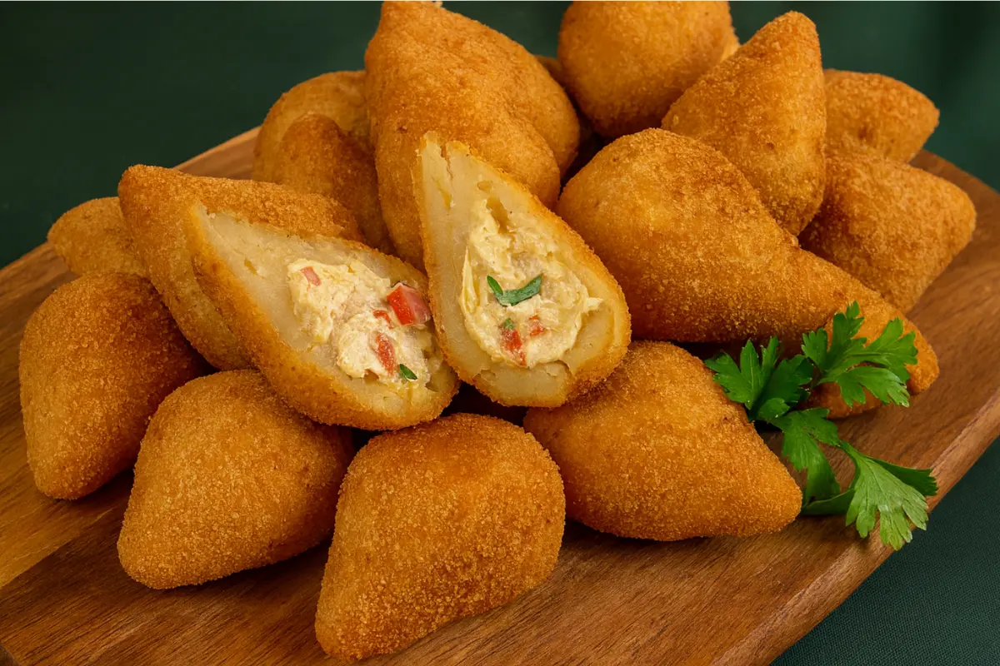

A coxinha não é apenas um salgado; é uma experiência gastronômica completa envolta em uma massa de batata perfeitamente dourada e crocante. O seu formato em gota desafia as leis da física para abrigar um recheio suculento de frango desfiado temperado com ervas e, para os paladares mais exigentes, o indispensável catupiry. Cada mordida revela uma textura que equilibra a resistência da casca frita com a maciez interna, criando um vício impossível de ignorar em qualquer vitrine de padaria.
No Brasil, a discussão sobre por onde começar a comer — se pela ponta ou pela base — é quase tão intensa quanto um clássico de futebol de domingo. Seja em um posto de gasolina de beira de estrada ou em uma festa de aniversário elegante, a coxinha de frango reina absoluta como o lanche preferido de todas as classes sociais. Acompanhada de uma pimenta de qualidade ou um simples ketchup, ela se torna o combustível oficial para enfrentar a rotina com um pouco mais de alegria.
